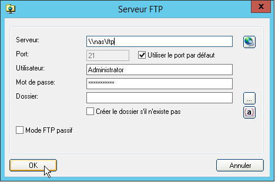

Watchdoc ScanCare - Configurer un dossier FTP
Principe
Watchdoc ScanCare vous permet d'enregistrer les documents numérisés sur un serveur FTP afin qu'ils puissent être exploités ensuite.
Pour configurer une sortie FTP :
Document numérisé
-
Dans la section Préférences > Document numérisé, dans le champ Serveur, cliquez sur le bouton
 pour accéder à la boîte de configuration du serveur FTP. Dans cette boîte, :
pour accéder à la boîte de configuration du serveur FTP. Dans cette boîte, : -
Serveur : indiquez le chemin vers le serveur FTP ;
-
Port : le numéro de port par lequel accéder au serveur FTP. Cochez la case pour utiliser le port 21 par défaut ;
-
Utilisateur : indiquez l'identifiant du compte habilité à accéder à la source de données ;
-
Mot de passe : indiquez le mot de passe du compte habilité à accéder à la source de données.
-
Dossier : dans la liste des dossiers de votre serveur FTP, sélectionnez le dossier dans lequel vous souhaitez enregistrer les document numérisés.

-
Cochez la case Créer le dossier s'il n'existe pas si vous souhaitez créer un dossier spécifique pour y stocker les documents au terme de la numérisation. Si vous souhaitez que le nom du dossier soit créé à l'aide d'éléments concrets, cliquez sur le bouton
 pour créer le nom du dossier à l'aide de variables et de fonctions :
pour créer le nom du dossier à l'aide de variables et de fonctions : 
-
dans la colonne de gauche déployez la liste des variables et fonctions disponibles ;
-
sélectionnez la variable ou la fonction que vous souhaitez ajouter. Le détail de la fonction s'affiche dans la fenêtre droite ;
-
cliquez sur le bouton
 pour ajouter la variable ou la fonction: cette dernière s'affiche dans la zone Dossier supérieure ;
pour ajouter la variable ou la fonction: cette dernière s'affiche dans la zone Dossier supérieure ;
-
-
Mode FTP passif : par défaut, la connexion FTP fonctionne en mode actif. Cochez la case si vous souhaitez qu'elle fonctionne en mode passif.
Fichier de métadonnées :
-
Créer un fichier CSV : cochez la case afin que Watchdoc ScanCare® génère un fichier de métadonnées CSV associé au fichier numérisé.
-
Serveur : indiquez le chemin vers le serveur dans lequel vous souhaitez enregistrer le fichier CSV ;
-
Nom de fichier : cliquez sur Création du nom de fichier pour accéder à l'interface de création du nom de fichier à partir de variables et fonctions (cf. ci-dessus) ;
-
Utiliser le nom de fichier du document : cochez cette case pour attribuer au fichier CSV le même nom que celui du fichier numérisé. Pour compléter ce nom de fichier à l'aide d'élément supplémentaires, cliquez sur le bouton Avancé.
- Add OCR text to file : cochez la case pour ajouter dans le fichier de métadonnées CSV tout le contenu du document numérisé extrait de l'opération de reconnaissance de caractères ;
- Add Zonal-OCR text to file :cochez la case pour ajouter dans le fichier de métadonnées CSV le contenu extrait de l'opération ciblée de reconnaissance de caractères.
-
-
Créer un fichier XML: cochez la case afin que Watchdoc ScanCare® génère un fichier de métadonnées XML associé au fichier numérisé.
-
Serveur : indiquez le chemin vers le serveur dans lequel vous souhaitez enregistrer le fichier XML ;
-
Nom de fichier : cliquez sur Création du nom de fichier pour accéder à l'interface de création du nom de fichier à partir de variables et fonctions (cf. ci-dessus) ;
-
Utiliser le nom de fichier du document : cochez cette case pour attribuer au fichier CSV le même nom que celui du fichier numérisé. Pour compléter ce nom de fichier à l'aide d'élément supplémentaires, cliquez sur le bouton Avancé.
-
Add OCR text to file : cochez la case pour ajouter dans le fichier de métadonnées XML tout le contenu du document numérisé extrait de l'opération de reconnaissance de caractères ;
-
Add Zonal-OCR text to file :cochez la case pour ajouter dans le fichier de métadonnées XML le contenu extrait de l'opération ciblée de reconnaissance de caractères.
-